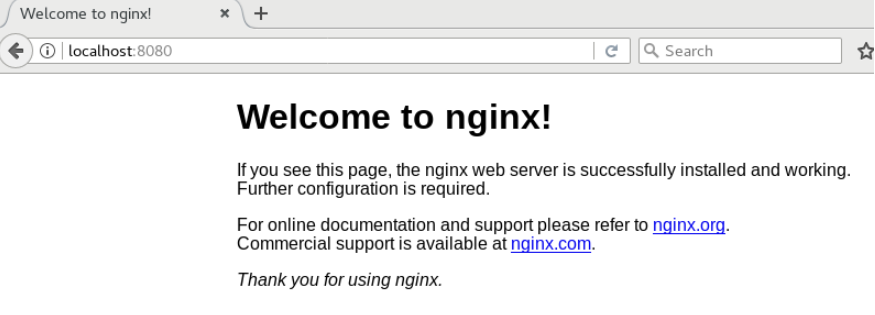
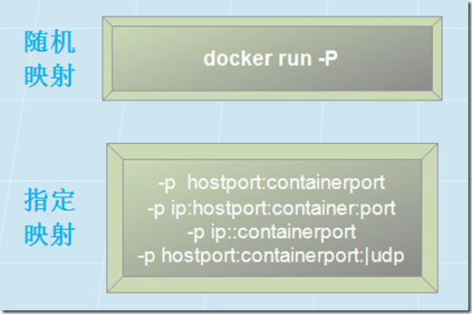
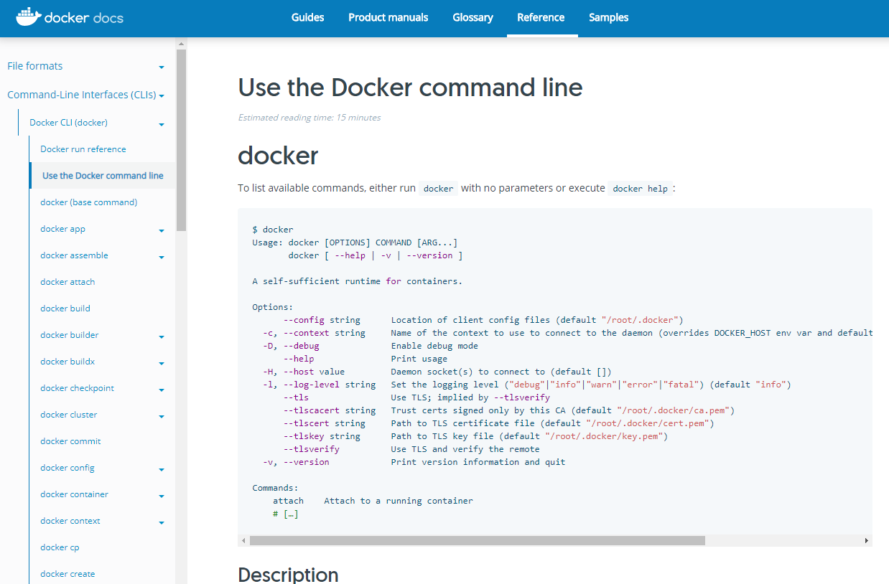
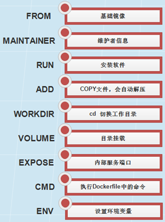
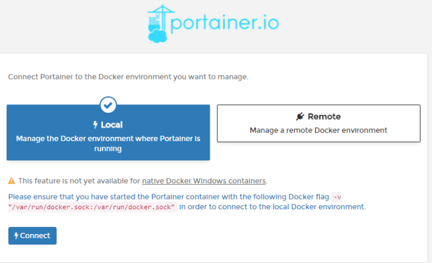
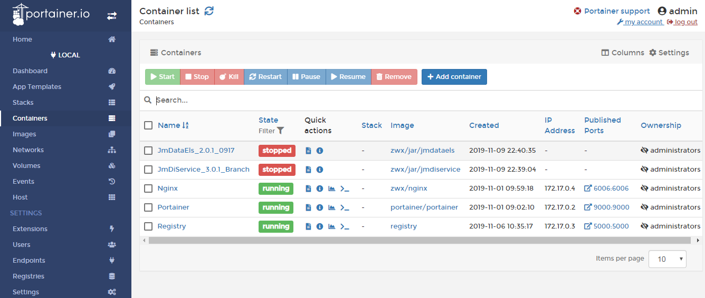

目录
- Docker 简介
- Docker 优势
- Docker 基本概念
- Docker 安装使用
- Docker 常用命令
- Docker 镜像构建
- Docker 本地仓库
- Docker 图形管理工具 Portainer
- Docker 集群管理工具 Swarm
- Docker 运维流程图
- Docker 配置管理
- Docker 后续问题
- Docker 报错解决
Docker 简介
Docker 是一个开源的应用容器引擎，开发者可以打包自己的应用到容器里面，然后迁移到其他机器的 docker 应用中，可以实现快速部署。
简单的理解，docker 就是一个软件集装箱化平台，就像船只、火车、卡车运输集装箱而不论其内部的货物一样，软件容器充当软件部署的标准单元，其中可以包含不同的代码和依赖项。
按照这种方式容器化软件，开发人员和 IT 专业人员只需进行极少修改或不修改，即可将其部署到不同的环境，如果出现的故障，也可以通过镜像，快速恢复服务。
{kind=link}
Docker 优势
特性优势
{kind=link}
资源优势
{kind=link}
Docker 基本概念
Client（客户端）：是 Docker 的用户端，可以接受用户命令和配置标识，并与 Docker daemon 通信。
Images（镜像）：是一个只读模板，含创建 Docker 容器的说明，它与操作系统的安装光盘有点像。
Containers（容器）：镜像的运行实例，镜像与容器的关系类比面向对象中的类和对象。
Registry（仓库）：是一个集中存储与分发镜像的服务。最常用的 Registry 是官方的 Docker Hub。
{kind=link}
Docker 安装使用
操作系统：CentOS 7
安装依赖
1
yum install -y yum-utils device-mapper-persistent-data lvm2
添加软件源
1
yum-config-manager --add-repo http://mirrors.aliyun.com/docker-ce/linux/centos/docker-ce.repo # 指定阿里云镜像源
安装 docker-ce（对系统内核有一定要求，centos6 不支持）
1
2yum clean all yum makecache fast # 重新生成缓存
yum -y install docker-ce docker-ce-cli containerd.io设置自启并启动
1
2systemctl enable docker
systemctl start docker查看版本
1
docker version
{kind=link}
运行示例：Nginx
- 搜索并下载镜像
1
2docker search nginx
docker pull nginx
{kind=link}
- 启动一个容器并映射端口到本地
1
docker run -d -p 8080:80 --name Nginx nginx # 参数详解见下文
{kind=link}
- 访问本地映射端口

{kind=link}
Docker 常用命令
镜像控制
1 | 搜索镜像：docker search [OPTIONS] TERM |
{kind=link}
容器控制
1 | 启动/重启容器：docker start/restart CONTAINER |
{kind=link}
容器启动
1 | docker run [OPTIONS] IMAGE [COMMAND] [ARG...] |
-d：后台运行容器，并返回容器 ID-i：以交互模式运行容器，通常与-t同时使用-t：为容器重新分配一个伪输入终端，通常与-i同时使用-v：绑定挂载目录--name="mycontainer"：为容器指定一个名称--net="bridge"：指定容器的网络连接类型，支持如下：bridge/host/none/container:<name|id>-p/-P：端口映射，格式如图：
{kind=link}
其他命令
1 | 查看 docker 信息：docker info |
{kind=link}
更多可以参考官网：https://docs.docker.com/engine/reference/commandline/cli/

{kind=link}
Docker 镜像构建
Docker commit（1 运行 2 修改 3 保存）
运行容器
1
docker run -dit -p 8080:80 --name Nginx nginx
修改容器（这里我只是做个演示，所以就复制一下文件，具体修改需要根据你实际情况）
1
docker cp custom.conf Nginx:/etc/nginx/conf.d/
将容器保存为新的镜像
1
docker commit Nginx zwx/nginx
{kind=link}
Dockerfile（1 编写 2 构建）
- 编写 Dockerfile 文件
1
vim Dockerfile
{kind=link}
- 执行 Dockerfile 文件
1
docker build -t zwx/nginx . # 后面有个点，代表当前目录下 dockerfile 文件
{kind=link}
- Dockerfile 常用指令

{kind=link}
更多可以参考：【转载】Dockerfile 文件详解
Docker 本地仓库
拉取镜像仓库
1
2docker search registry
docker pull registry启动镜像服务
1
2
3
4
5
6
7docker run -dit \
--name=Registry \ # 指定容器名称
-p 5000:5000 \ # 仓库默认端口是 5000，映射到宿主机，这样可以使用宿主机地址访问
--restart=always \ # 自动重启，这样每次 docker 重启后仓库容器也会自动启动
--privileged=true \ # 增加安全权限，一般可不加
-v /usr/local/my_registry:/var/lib/registry \ # 把仓库镜像数据保存到宿主机
registry注册 https 协议（需要通过本地仓库下载镜像，均需要配置）
1
2vim /etc/docker/daemon.json # 默认无此文件，需自行添加，有则追加一下内容。
{ "insecure-registries":[" xx.xx.xx.xx:5000"] } # 指定 ip 地址或域名新增 tag 指明仓库地址
1
docker tag zwx/nginx x.xx.xx.xx:5000/zwx/nginx # 如果构建时已经指定仓库地址，则可以省略
上传镜像到本地仓库
1
docker push x.xx.xx.xx:5000/zwx/nginx
查看本地仓库
1
curl -XGET http://x.xx.xx.xx:5000/v2/_catalog
{kind=link}
更多可以参考：docker 搭建本地私有仓库
Docker 与图形管理工具 Portainer
简介
Portainer 是 Docker 的图形化管理工具，提供状态显示面板、应用模板快速部署、容器镜像网络数据卷的基本操作（包括上传下载镜像，创建容器等操作）、事件日志显示、容器控制台操作、Swarm 集群和服务等集中管理和操作、登录用户管理和控制等功能。功能十分全面，基本能满足中小型单位对容器管理的全部需求。
{kind=link}
安装使用
搜索并下载镜像
1
2docker search portainer
docker pull portainer/portainer单机方式运行
1
2
3
4
5docker run -d \
-p 9000:9000 \ # portainer 默认端口是 9000，映射到本地 9000 端口，通过本地地址访问
--restart=always \ # 设置自动重启
-v /var/run/docker.sock:/var/run/docker.sock \ # 单机必须指定docker.sock
--name Prtainer portainer/portainer访问http://localhost:9000
首次登陆需要注册用户，给 admin 用户设置密码，然后单机版选择 local 连接即可。 控制管理

{kind=link}
{kind=link}
更多可以参考：Portainer 介绍
Docker 与集群管理工具 Swarm
简介
Swarm 是 Docker 官方提供的一款集群管理工具，其主要作用是把若干台 Docker 主机抽象为一个整体，并且通过一个入口统一管理这些 Docker 主机上的各种 Docker 资源。
{kind=link}
安装使用
Swarm 在 Docker 1.12 版本之前属于一个独立的项目，在 Docker 1.12 版本发布之后，该项目合并到了 Docker 中，成为 Docker 的一个子命令。
- 启动 swarm 集群只需要执行初始化命令即可：
1
2
3docker swarm init \ # 默认初始化节点为管理节点
--advertise-addr xx.xx.xx.xx \ #指定使用的 ip
--listen-addr xx.xx.xx.xx:2377 #指定监听 ip 和 port，默认为 2377
{kind=link}
设置 manager 节点
1
2
3
4
5
6docker swarm join-token manager #获取管理节点 token，放入下面命令
docker swarm join \
--advertise-addr xx.xx.xx.xx \
--listen-addr xx.xx.xx.xx:2377 \
--token SWMTKN-1-29ynh5uyfiiospy4fsm4pd4xucyji2rn0oj4b4ak4s7a37syf9-ajkrv2ctjr5cmxzuij75tbrmz \
xx.xx.xx.xx:2377设置 worker 节点
1
2
3
4
5
6docker swarm join-token worker #获取工作节点 token，放入下面命令
docker swarm join \
--advertise-addr xx.xx.xx.xx \
--listen-addr xx.xx.xx.xx:2377 \
--token SWMTKN-1-29ynh5uyfiiospy4fsm4pd4xucyji2rn0oj4b4ak4s7a37syf9-ajkrv2ctjr5cmxzuij75tbrmz \
xx.xx.xx.xx:2377查看节点
1
docker node ls
{kind=link}
- 创建服务
1
2
3
4
5
6
7
8
9docker service create [OPTIONS] IMAGE [COMMAND] [ARG...]
--detach , -d: 指定容器运行于前台还是后台，默认为 false
--name: 服务名称
--network: 网络连接
--publish , -p: 端口映射
--env , -e: 设置环境变量
--tty , -t: 分配 tty 设备，该可以支持终端登录
--mount: 文件挂载
--replicas: 指定任务数量
对比K8s究竟有何异同？
- 出生不同
Google 根据其在 Linux 上容器管理经验，改造到 docker 管理上，就是 kubernetes。他的在许多方面表现良好,最重要的是构造于 Google 多年的宝贵经验之上。
kubernetes 并不是为了 docker 写的，kubernetes 把集群带到了一个全新的高度，代价是学习曲线比较陡。docker-swarm 使用了一个不同的方式,它是 docker 原生的集群工具。
最方便的部分是它暴露了 docker 标准的编程接口，意味着你之前一直在使用的任何与 docker 沟通的工具（docker CLI, docker compose 等），都可以无缝的在 docker swarm 上使用。 - 安装配置不同
安装设置 swarm 非常简单，简单明了并且很灵活。我们需要做的就是安装一个服务发现工具，然后在所有的节点上安装 swarm 容器。
相比较而言，kubernetes 的安装就有点复杂晦涩了。不同的操作系统上安装都不同。每个操作系统都有自己的独立安装指令。 - 运行方式不同
使用 Swarm 和使用容器没有什么不同。比如，你习惯于使用 Docker CLI（命令行接口），你可以继续使用几乎相同的命令。
如果你习惯于使用 Docker Componse 来运行容器，你可以继续在 Swarm 集群中使用。不管你之前习惯于怎么使用容器，你仍旧可以使用，只是在更大级别的集群中使用。
Kubernetes 要求你去学习它自己的 CLI（命令行接口）和配置。你不能使用你之前创建的 docker-compose.yml 配置，你必须要去新建与 Kubernetes 对应的配置。
你也不能使用之前学习的 Docker CLI（命令行接口）。你必须要去学习 Kubernetes CLI（命令行接口）
最后，当需要在 Docker Swarm 和 Kubernetes 做出选择时，可以考虑如下几点：
你是否想依赖于 Docker 自己来解决集群的问题。如果是，选择 Swarm。如果某些功能在 Docker 中不支持，那它也非常可能在 Swarm 中找不到，因为 Swarm 是依赖于 Docker API 的。
另外一方面，如果你想要一个工具可以解决 Docker 的限制，Kubernetes 将是不错的选择。Kubernetes 不是基于 Docker，而是基于 Google 多年对于管理容器的经验。它是按照自己的方式来行事。
Docker 运维流程图
{kind=link}
Docker 配置管理
用了容器以后，还需要配置管理吗？
起初我们跟 Docker 官方一样，属于理想主义派。天真的认为容器就应该是 inmutable 的，当需要配置变更的时候，重新构建镜像重新部署。
基于这一思路，我们在 cSphere 中添加了个镜像自动构建模块，用户可以配置代码仓库的地址。
服务的配置文件保存于 Git 或者 SVN 库中，需要配置变更时，向版本库中 Push 一下，自动通过 hook 触发镜像构建，并自动完成线上容器的重建。
通过这套系统，用户可以非常方便的批量更新线上的服务，并不局限于配置文件的变更，代码的变更也天生支持。
经过实际使用，这套系统能够很好的满足开发和测试环境的需求，提升工作效率。
但是，在生产环境中使用的时候，我们发现这种流程其实并不那么完美，主要表现在：
镜像构建和部署虽然自动化了，但构建是针对 VCS 中的某个仓库的，改一行配置就得整体重新构建一下，在更新容器时还需要把镜像重新分发到所有机器上，配置变更速度太慢。
这种方式的配置变更会涉及到服务的重启，这在生产环境某些场景下是不可接受的 ，有可能引起短暂的服务中断。
应用配置文件应该需要做到什么？
Docker 应用配置文件能够保持能够支持针对不同环境作出更改。另外配置文件支持在线更改，重启就生效。一般分为以下两种方式。
- Docker 环境变量
需要在制作镜像的时候就需要提前想好，有哪些参数是部署容器的时候会经常更改，
然后把这些参数抽出来做成容器的环境变量，然后在部署的容器的时候填入不同的参数即可。
但是如果后续发现有一些参数不同场景下部署的时候也会修改，那就需要再重新制作镜像了。 - 应用配置文件
上述的管理方式不太灵活，灵活的管理方式是将配置文件和镜像剥离开，这样就不会被镜像给绑定了。
注：最新版本可以参考 docker config 命令管理
Docker 后续问题
- 集群环境
- 网络安全
- 存储管理
- 日志收集
- 实时监控
- 性能调优
- ……
Docker 报错解决
【解决】Got permission denied while trying to connect to the Docker daemon socket at……dial unix /var/run/docker.sock: permission denied
【解决】error pulling image configuration: Get https:// …… x509: certificate has expired or is not yet valid
【解决】image … could not be accessed on a registry to record its digest.
【解决】http: server gave HTTP response to HTTPS client
【解决】OCI runtime exec failed……executable file not found in $PATH”: unknown
更多报错解决方案持续更新中：【解决】Docker Errors
如果想更详细，更深入了解 Docker，推荐 >>> Docker 最全教程——从理论到实战（一）